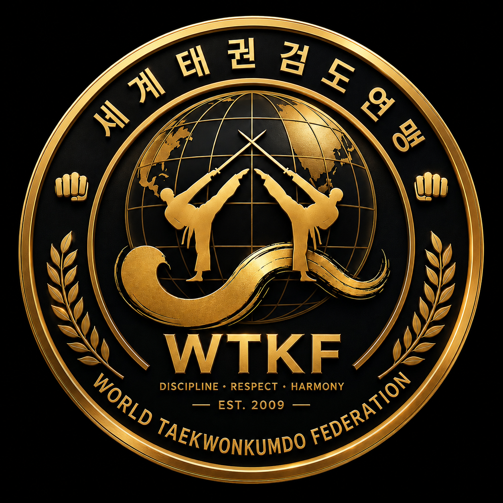

2009, 새로운 무도의 시작
태권도의 장점과 검도의 장점을 아우르는 새로운 무도체계를 구축하고 지속적으로 기술과 교육체계를 발전시킵니다.
연맹의 역사 →
WORLD TAEKWON-GEOMDO FEDERATION · EST. 2009
태권검도는 태권도의 역동성과 검도의 절제된 검법을 하나의 교육체계로 발전시킨 신개념 무도·스포츠입니다. 창시철학과 기술, 지도자교육, 지부, 공식자료, 미디어와 검증 시스템을 하나의 플랫폼에서 만날 수 있습니다.
TAEKWON-GEOMDO AT A GLANCE
기술만이 아니라 철학 · 교육 · 조직 · 검증까지 하나로 연결합니다.
경찰무도·태권검도·드론순찰대의 교육과정, 지도자 자격, 학생 급증·단증, 인증도장, 대원·지부 신청을 IPMA 본부 통합 시스템에서 접수하고 진행상태까지 확인할 수 있습니다.
구조 >> 교차원리, 교차원리 기반 무도
태권도의 장점과 검도의 장점을 아우르는 신개념 무도·스포츠.
이 플랫폼은 철학(구조) → 교육(프로그램) → 운영(지부/지도자) → 표준(자료) → 검증(조회)을
하나의 흐름으로 연결하여 국제 품질을 설계합니다.
태권검도는 체계적인 교육과 안전한 수련을 바탕으로 세계 각 지역에서 함께 성장하는 무도 문화를 만들어 갑니다.
창시철학에서 교육, 지도자, 지부와 공식 인증까지 하나의 체계로 이어집니다.
구조(교차원리)로 기술을 정리합니다.
구조를 과정으로 구현합니다.
현장 운영을 표준화합니다.
안전하고 일관된 교육을 위해 지도자와 지부가 함께 활용하는 공식 자료입니다.
공식 자료는 교육과 심사, 지부 운영에 필요한 기준을 이해하는 데 도움을 줍니다.
누구나 확인 가능한 검증 구조
단증 · 자격/인증 · 지도자 등록 · 공식 지부/지정도장
국제 확장에 가장 강력한 무기는 “검증 가능성”입니다.
등록된 단증·자격·지도자·지부 정보를 공식 조회 페이지에서 확인할 수 있습니다.
공식 조회는 회원과 지도자, 지부의 등록 정보를 투명하게 확인할 수 있도록 돕습니다.
다국어·지부·지도자 네트워크 기반 확장
국제 파트너가 첫 방문에 이해할 수 있도록 다국어 페이지를 준비합니다.
파트너/기관/도장 네트워크는 “표준 문서 + 검증 + 교육 과정”으로 유지됩니다. 제휴 문의는 신청·문의 페이지로 접수하세요.
태권검도는 국내외 지도자, 도장, 단체와의 건전한 교류와 협력을 넓혀가고 있습니다.
교육·세미나·시범·국제교류 등 다양한 분야의 협력을 통해 태권검도의 가치를 함께 나눕니다.
태검 품새부터 기본기술, 국가대표 시범단까지 태권검도의 다양한 수련과 시범 영상을 한눈에 만나보세요.